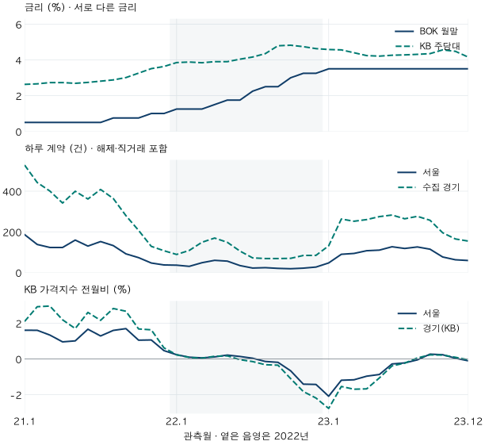

금리와 돈 · 2022년 거래절벽 회고
2022년 거래절벽, 금리·계약·집값은 같은 달에 움직였을까?
2021~2023년 기준금리·KB 주담대 금리·서울과 수집 경기의 계약·KB 가격지수를 같은 달력에 놓습니다. 거래 감소 확인월과 최저월, 가격 하락월을 구분하고 일정한 반응 시차로 읽을 수 없는 한계를 확인합니다.
분석 기간 · 2021~2023년 36개월 | 보유 자료 스냅샷 생성 · 거래 2026-10-04 · 집계 2026-10-10
2022년에는 금리가 오르고 아파트 거래와 가격이 함께 식었습니다. 그렇다면 같은 달에 움직였을까요? 보유 자료에서 서울·수집 경기의 2022년 1월 계약 건수는 이미 전년 같은 달보다 적었지만, KB 월간 아파트 가격지수가 처음 전월 대비 내린 달은 경기 6월·서울 8월이었습니다. 세 지표를 같은 달력에 놓을 수는 있어도, 이 간격을 곧바로 금리의 반응 시차라고 부를 수는 없습니다.
네 숫자는 같은 달이어도 같은 대상을 뜻하지 않습니다
한국은행 기준금리는 공식 변경일 이력을 바탕으로 각 월말에 유효한 값을 읽습니다. KB 주택담보대출 금리는 KB 소득 연계 통계의 월별 공통 금리입니다. 기준금리나 개인이 실제로 받은 대출금리와 같지 않으며, 보유 원천만으로 고정·변동금리의 구성이나 개인별 심사 조건을 알 수 없습니다.
계약 건수는 서울 25개 구·수집 경기 36개 시·구의 아파트 매매를 계약월로 셉니다. 반면 KB 가격지수는 KB가 공표한 광역 아파트 조사 지수입니다. 매달 거래된 집의 평균가격이 아니며, KB 경기 계열의 대상도 수집 경기 36지역과 같지 않습니다. 인천을 포함한 수도권 전체 거래 통계도 아닙니다.
2021년부터 이어 볼 때는 자료의 공개체계 변화도 중요합니다. 직거래 구분은 2021년 11월부터 있어 이전 달과 똑같이 제외하기 어렵습니다. 따라서 주 비교는 해제·직거래를 포함하고, 양수 가격·면적과 토지임대부 제외 조건을 같은 방식으로 적용했습니다. 해제·직거래를 제외한 수치는 2022~2023년만 별도로 제시합니다. 포함 기준이 바뀐 선을 하나의 추세처럼 잇지 않습니다.
기준금리와 주담대 금리는 어떻게 달라졌나요?
한국은행 공식 변경 이력을 월말 기준으로 읽으면 기준금리는 2021년 1월 0.50%, 12월 1.00%, 2022년 12월 3.25%, 2023년 1월 3.50%입니다. 2023년에는 이 수준이 연말까지 이어졌습니다. 월초부터 해당 금리가 적용됐다는 뜻은 아닙니다.
같은 관측월의 KB 주담대 금리는 2021년 1월 2.63%, 12월 3.63%, 2022년 12월 4.63%였습니다. 2023년에는 1월 4.58%에서 12월 4.16%로 낮아졌습니다. 정책금리가 그대로인 기간에도 이 금리가 움직이므로 두 선을 대신 사용하면 안 됩니다.

36개월의 두 금리 확인하기
| 월 | BOK 기준금리 | KB 주담대 금리 |
|---|---|---|
| 2021-01 | 0.50 | 2.63 |
| 2021-02 | 0.50 | 2.66 |
| 2021-03 | 0.50 | 2.73 |
| 2021-04 | 0.50 | 2.73 |
| 2021-05 | 0.50 | 2.69 |
| 2021-06 | 0.50 | 2.74 |
| 2021-07 | 0.50 | 2.81 |
| 2021-08 | 0.75 | 2.88 |
| 2021-09 | 0.75 | 3.01 |
| 2021-10 | 0.75 | 3.26 |
| 2021-11 | 1.00 | 3.51 |
| 2021-12 | 1.00 | 3.63 |
| 2022-01 | 1.25 | 3.85 |
| 2022-02 | 1.25 | 3.88 |
| 2022-03 | 1.25 | 3.84 |
| 2022-04 | 1.50 | 3.90 |
| 2022-05 | 1.75 | 3.90 |
| 2022-06 | 1.75 | 4.04 |
| 2022-07 | 2.25 | 4.16 |
| 2022-08 | 2.50 | 4.35 |
| 2022-09 | 2.50 | 4.79 |
| 2022-10 | 3.00 | 4.82 |
| 2022-11 | 3.25 | 4.74 |
| 2022-12 | 3.25 | 4.63 |
| 2023-01 | 3.50 | 4.58 |
| 2023-02 | 3.50 | 4.56 |
| 2023-03 | 3.50 | 4.40 |
| 2023-04 | 3.50 | 4.24 |
| 2023-05 | 3.50 | 4.21 |
| 2023-06 | 3.50 | 4.26 |
| 2023-07 | 3.50 | 4.28 |
| 2023-08 | 3.50 | 4.31 |
| 2023-09 | 3.50 | 4.35 |
| 2023-10 | 3.50 | 4.56 |
| 2023-11 | 3.50 | 4.48 |
| 2023-12 | 3.50 | 4.16 |
거래절벽은 얼마나 큰 감소였나요?
해제·직거래를 포함한 동일 기준의 서울 계약은 2021년 42,350건에서 2022년 12,034건으로 71.58% 줄었습니다. 수집 경기는 120,611건에서 36,917건으로 69.39% 감소했습니다. 세 해 모두 365일이므로 연간 건수와 하루 건수의 연간 변화율은 같습니다.
| 지역·연도 | 계약 건수 | 달력일 | 하루 건수 |
|---|---|---|---|
| 서울 · 2021년 | 42,350 | 365 | 116.03 |
| 서울 · 2022년 | 12,034 | 365 | 32.97 |
| 서울 · 2023년 | 34,333 | 365 | 94.06 |
| 수집 경기 · 2021년 | 120,611 | 365 | 330.44 |
| 수집 경기 · 2022년 | 36,917 | 365 | 101.14 |
| 수집 경기 · 2023년 | 84,304 | 365 | 230.97 |
하락은 2022년 하반기에 갑자기 처음 나타난 현상이 아닙니다. 2021년에도 상반기에서 하반기로 하루 계약이 서울 143.53→88.97건, 수집 경기 412.62→249.60건으로 줄었습니다. 2022년에는 상반기 서울 44.12건·경기 128.37건에서 하반기 22.00건·74.36건으로 더 낮아졌습니다. 반기의 계절 차이까지 제거한 결과는 아닙니다.
모든 반기의 원 건수와 하루 건수
| 지역·반기 | 계약 건수 | 달력일 | 하루 건수 |
|---|---|---|---|
| 서울 · 2021년 상반기 | 25,979 | 181 | 143.53 |
| 서울 · 2021년 하반기 | 16,371 | 184 | 88.97 |
| 서울 · 2022년 상반기 | 7,986 | 181 | 44.12 |
| 서울 · 2022년 하반기 | 4,048 | 184 | 22.00 |
| 서울 · 2023년 상반기 | 17,280 | 181 | 95.47 |
| 서울 · 2023년 하반기 | 17,053 | 184 | 92.68 |
| 수집 경기 · 2021년 상반기 | 74,685 | 181 | 412.62 |
| 수집 경기 · 2021년 하반기 | 45,926 | 184 | 249.60 |
| 수집 경기 · 2022년 상반기 | 23,235 | 181 | 128.37 |
| 수집 경기 · 2022년 하반기 | 13,682 | 184 | 74.36 |
| 수집 경기 · 2023년 상반기 | 44,051 | 181 | 243.38 |
| 수집 경기 · 2023년 하반기 | 40,253 | 184 | 218.77 |
2022년 1월만 비교해도 전년 같은 달보다 서울은 80.75%, 수집 경기는 83.24% 적습니다. 두 지역 모두 2022년의 12개월 내내 전년 같은 달보다 적었습니다. 다만 전년 동월 자체의 거래 규모가 달마다 달라, 감소율 하나만으로 월간 활동의 크기를 읽을 수는 없습니다.
예를 들어 서울의 2022년 12월 전년동월 감소율은 28.05%로 1월보다 작지만, 하루 계약은 26.65건으로 1월의 35.90건보다 적습니다. 감소율이 완화됐다고 건수가 더 많아진 것은 아닙니다. 각각 비교하는 전년의 분모가 다르기 때문입니다.
2023년에는 서울 34,333건, 수집 경기 84,304건으로 늘었습니다. 기준금리가 3.50%에 머물러도 관측 거래가 다시 증가할 수 있다는 사례입니다. 그렇다고 금리가 거래에 영향이 없었다는 반증도 아닙니다. 주담대 금리와 다른 조건이 함께 변했고, 2023년 건수는 2021년보다 여전히 서울 18.93%, 경기 30.10% 적었습니다.
36개월 전체 계약과 전년 같은 달 비교
| 계약월 | 서울25구 | 수집경기36지역 |
|---|---|---|
| 2021-01 | 5,781건 / 186.48건 / 비교 없음 | 16,388건 / 528.65건 / 비교 없음 |
| 2021-02 | 3,858건 / 137.79건 / 비교 없음 | 12,392건 / 442.57건 / 비교 없음 |
| 2021-03 | 3,815건 / 123.06건 / 비교 없음 | 12,418건 / 400.58건 / 비교 없음 |
| 2021-04 | 3,688건 / 122.93건 / 비교 없음 | 10,251건 / 341.70건 / 비교 없음 |
| 2021-05 | 4,942건 / 159.42건 / 비교 없음 | 12,392건 / 399.74건 / 비교 없음 |
| 2021-06 | 3,895건 / 129.83건 / 비교 없음 | 10,844건 / 361.47건 / 비교 없음 |
| 2021-07 | 4,716건 / 152.13건 / 비교 없음 | 12,661건 / 408.42건 / 비교 없음 |
| 2021-08 | 4,100건 / 132.26건 / 비교 없음 | 11,288건 / 364.13건 / 비교 없음 |
| 2021-09 | 2,748건 / 91.60건 / 비교 없음 | 8,389건 / 279.63건 / 비교 없음 |
| 2021-10 | 2,261건 / 72.94건 / 비교 없음 | 6,415건 / 206.94건 / 비교 없음 |
| 2021-11 | 1,398건 / 46.60건 / 비교 없음 | 3,857건 / 128.57건 / 비교 없음 |
| 2021-12 | 1,148건 / 37.03건 / 비교 없음 | 3,316건 / 106.97건 / 비교 없음 |
| 2022-01 | 1,113건 / 35.90건 / -80.75% | 2,747건 / 88.61건 / -83.24% |
| 2022-02 | 844건 / 30.14건 / -78.12% | 3,038건 / 108.50건 / -75.48% |
| 2022-03 | 1,488건 / 48.00건 / -61.00% | 4,607건 / 148.61건 / -62.90% |
| 2022-04 | 1,791건 / 59.70건 / -51.44% | 5,081건 / 169.37건 / -50.43% |
| 2022-05 | 1,732건 / 55.87건 / -64.95% | 4,604건 / 148.52건 / -62.85% |
| 2022-06 | 1,018건 / 33.93건 / -73.86% | 3,158건 / 105.27건 / -70.88% |
| 2022-07 | 674건 / 21.74건 / -85.71% | 2,224건 / 71.74건 / -82.43% |
| 2022-08 | 733건 / 23.65건 / -82.12% | 2,127건 / 68.61건 / -81.16% |
| 2022-09 | 606건 / 20.20건 / -77.95% | 2,054건 / 68.47건 / -75.52% |
| 2022-10 | 571건 / 18.42건 / -74.75% | 2,156건 / 69.55건 / -66.39% |
| 2022-11 | 638건 / 21.27건 / -54.36% | 2,510건 / 83.67건 / -34.92% |
| 2022-12 | 826건 / 26.65건 / -28.05% | 2,611건 / 84.23건 / -21.26% |
| 2023-01 | 1,454건 / 46.90건 / 30.64% | 4,066건 / 131.16건 / 48.02% |
| 2023-02 | 2,505건 / 89.46건 / 196.80% | 7,362건 / 262.93건 / 142.33% |
| 2023-03 | 2,903건 / 93.65건 / 95.09% | 7,816건 / 252.13건 / 69.65% |
| 2023-04 | 3,212건 / 107.07건 / 79.34% | 7,807건 / 260.23건 / 53.65% |
| 2023-05 | 3,409건 / 109.97건 / 96.82% | 8,520건 / 274.84건 / 85.06% |
| 2023-06 | 3,797건 / 126.57건 / 272.99% | 8,480건 / 282.67건 / 168.52% |
| 2023-07 | 3,662건 / 118.13건 / 443.32% | 8,190건 / 264.19건 / 268.26% |
| 2023-08 | 3,893건 / 125.58건 / 431.11% | 8,563건 / 276.23건 / 302.59% |
| 2023-09 | 3,436건 / 114.53건 / 467.00% | 7,706건 / 256.87건 / 275.17% |
| 2023-10 | 2,362건 / 76.19건 / 313.66% | 6,054건 / 195.29건 / 180.80% |
| 2023-11 | 1,874건 / 62.47건 / 193.73% | 4,947건 / 164.90건 / 97.09% |
| 2023-12 | 1,826건 / 58.90건 / 121.07% | 4,793건 / 154.61건 / 83.57% |
거래 감소와 가격 하락 사이에 몇 달의 시차가 있었나요?
먼저 ‘거래 감소’를 어떻게 정했는지부터 확인해야 합니다. 여기서는 2022년 안에서 전년동월 하루 건수가 처음 적어진 달과, 두 달 연속 적음을 확인하는 두 번째 달을 구했습니다. 양쪽 모두 1월·2월입니다. 그런데 1월부터 이미 감소 상태이므로 실제 감소가 시작된 달은 이 규칙으로 찾지 못했습니다.
2022년 안의 최저 하루 계약은 서울 10월 18.42건, 수집 경기 9월 68.47건입니다. 원 건수로 골라도 같은 달이지만, 이것은 ‘줄기 시작한 달’이 아니라 선택한 한 해의 최솟값입니다. 같은 자료에서도 어떤 질문을 하느냐에 따라 날짜가 달라집니다.
| 지역 | 거래 첫 음수월 | 거래 2개월 확인 | 거래 최저월 | KB 첫 하락월 | KB 2개월 확인 |
|---|---|---|---|---|---|
| 서울 | 2022-01 (시작 미확정) | 2022-02 | 2022-10 | 2022-08 | 2022-09 |
| 수집 경기 | 2022-01 (시작 미확정) | 2022-02 | 2022-09 | 2022-06 | 2022-07 |
KB 월간 가격지수는 경기 6월·서울 8월에 처음 전월 대비 음수가 됐고, 두 달 연속 하락 확인은 각각 7월·9월입니다. 기존 2022년 가격 하락 글과 같은 지수를 대조했습니다. 거래 감소 확인이 먼저라는 관측은 가능하지만, 전년동월 거래와 전월 가격을 비교한 간격을 ‘금리 인상 후 몇 개월이면 집값이 내린다’는 규칙으로 바꾸면 안 됩니다.
관측월은 당시 발표일과도 다릅니다. 이번에는 뒤늦은 신고·정정과 개정이 반영된 현재 보유 자료를 읽었고, 매달 그때 알 수 있었던 최초 자료를 복원하지 않았습니다. KB의 표본·개편과 실거래의 신고 체계도 서로 다릅니다. 같은 달력에 정렬했다는 사실만으로 정보가 동시에 알려졌다고 볼 수 없습니다.
36개월 KB 지수와 전월비 확인하기
| 관측월 | 서울 | 경기(KB 광역) |
|---|---|---|
| 2021-01 | 83.17 / 1.60% | 89.64 / 2.09% |
| 2021-02 | 84.50 / 1.60% | 92.26 / 2.92% |
| 2021-03 | 85.62 / 1.33% | 94.98 / 2.96% |
| 2021-04 | 86.44 / 0.95% | 97.06 / 2.19% |
| 2021-05 | 87.31 / 1.01% | 98.71 / 1.70% |
| 2021-06 | 88.76 / 1.66% | 101.28 / 2.60% |
| 2021-07 | 89.90 / 1.28% | 103.46 / 2.16% |
| 2021-08 | 91.33 / 1.59% | 106.38 / 2.82% |
| 2021-09 | 92.88 / 1.69% | 109.22 / 2.67% |
| 2021-10 | 93.85 / 1.05% | 111.05 / 1.68% |
| 2021-11 | 94.84 / 1.06% | 112.85 / 1.63% |
| 2021-12 | 95.28 / 0.46% | 113.55 / 0.62% |
| 2022-01 | 95.50 / 0.23% | 113.81 / 0.23% |
| 2022-02 | 95.59 / 0.09% | 113.90 / 0.08% |
| 2022-03 | 95.64 / 0.05% | 113.94 / 0.04% |
| 2022-04 | 95.75 / 0.11% | 114.10 / 0.15% |
| 2022-05 | 95.95 / 0.21% | 114.29 / 0.17% |
| 2022-06 | 96.08 / 0.13% | 114.24 / -0.05% |
| 2022-07 | 96.11 / 0.03% | 114.07 / -0.15% |
| 2022-08 | 95.97 / -0.15% | 113.70 / -0.33% |
| 2022-09 | 95.78 / -0.19% | 113.29 / -0.35% |
| 2022-10 | 95.14 / -0.67% | 112.04 / -1.11% |
| 2022-11 | 93.80 / -1.42% | 109.99 / -1.83% |
| 2022-12 | 92.45 / -1.43% | 107.58 / -2.19% |
| 2023-01 | 90.52 / -2.09% | 104.59 / -2.78% |
| 2023-02 | 89.44 / -1.20% | 102.97 / -1.55% |
| 2023-03 | 88.39 / -1.17% | 101.22 / -1.70% |
| 2023-04 | 87.53 / -0.97% | 99.52 / -1.68% |
| 2023-05 | 86.77 / -0.87% | 98.46 / -1.07% |
| 2023-06 | 86.52 / -0.28% | 98.07 / -0.40% |
| 2023-07 | 86.32 / -0.23% | 97.84 / -0.24% |
| 2023-08 | 86.27 / -0.06% | 97.89 / 0.05% |
| 2023-09 | 86.50 / 0.26% | 98.11 / 0.22% |
| 2023-10 | 86.70 / 0.23% | 98.32 / 0.21% |
| 2023-11 | 86.74 / 0.04% | 98.41 / 0.09% |
| 2023-12 | 86.64 / -0.11% | 98.36 / -0.05% |
지역마다 같은 정도로 거래가 줄었나요?
공개 지원이 확인된 서울 25개 구는 모두 2022년 연간 계약 건수가 2021년보다 적었습니다. 다만 감소 폭과 2023년의 회복 정도는 다릅니다. 아래 표는 모든 서울 구를 코드순으로 보존했으며, 시장 크기가 다른 구의 원 건수를 매수 기회 순위로 읽지 않습니다.
경기 36지역의 연간 표는 공동 미공개했습니다. 두 거래 포함 기준의 차이를 계산하면 작은 계약 집계가 드러나는 경우가 있기 때문입니다. 광역 경기 표는 공개 기준을 통과했지만, 그것으로 모든 경기 지역이 같은 방향이었다고 단정하지 않습니다. 이번 글은 61지역 전체의 지역별 수치 비교를 완성한 자료가 아닙니다.
서울25구 연간 건수와 변화율 보기
| 구 | 2021건수 | 2022건수 | 2023건수 | 2022변화 | 2023변화 |
|---|---|---|---|---|---|
| 종로구 | 442 | 165 | 308 | -62.67% | 86.67% |
| 중구 | 564 | 202 | 534 | -64.18% | 164.36% |
| 용산구 | 885 | 254 | 556 | -71.30% | 118.90% |
| 성동구 | 1,473 | 363 | 1,513 | -75.36% | 316.80% |
| 광진구 | 730 | 269 | 678 | -63.15% | 152.04% |
| 동대문구 | 1,630 | 534 | 1,474 | -67.24% | 176.03% |
| 중랑구 | 1,625 | 475 | 897 | -70.77% | 88.84% |
| 성북구 | 2,296 | 518 | 1,895 | -77.44% | 265.83% |
| 강북구 | 920 | 215 | 764 | -76.63% | 255.35% |
| 도봉구 | 1,856 | 410 | 1,104 | -77.91% | 169.27% |
| 노원구 | 3,917 | 867 | 2,599 | -77.87% | 199.77% |
| 은평구 | 1,669 | 625 | 1,461 | -62.55% | 133.76% |
| 서대문구 | 1,428 | 385 | 1,275 | -73.04% | 231.17% |
| 마포구 | 1,541 | 476 | 1,465 | -69.11% | 207.77% |
| 양천구 | 1,865 | 427 | 1,583 | -77.10% | 270.73% |
| 강서구 | 2,820 | 655 | 1,770 | -76.77% | 170.23% |
| 구로구 | 2,514 | 765 | 1,440 | -69.57% | 88.24% |
| 금천구 | 975 | 299 | 544 | -69.33% | 81.94% |
| 영등포구 | 1,882 | 630 | 1,703 | -66.52% | 170.32% |
| 동작구 | 1,556 | 443 | 1,269 | -71.53% | 186.46% |
| 관악구 | 1,407 | 403 | 884 | -71.36% | 119.35% |
| 서초구 | 2,112 | 630 | 1,527 | -70.17% | 142.38% |
| 강남구 | 2,171 | 790 | 2,248 | -63.61% | 184.56% |
| 송파구 | 2,092 | 704 | 2,717 | -66.35% | 285.94% |
| 강동구 | 1,980 | 530 | 2,125 | -73.23% | 300.94% |
다음 거래절벽 뉴스를 읽을 때는 세 줄을 적습니다
- 금리 이름과 날짜. 기준금리인지 대출금리인지, 관측월인지 발표일인지 적습니다. 본인의 월 상환액은 별도 조건으로 계산합니다.
- 계약 포함 기준과 분모. 해제·직거래 포함 여부를 확인하고, 전년동월 감소율 옆에 원 건수와 하루 건수도 적습니다.
- 가격의 종류와 날짜 규칙. 조사 지수와 실거래가격을 구분하고, 첫 하락·연속 확인·최저월 중 무엇을 말하는지 확인합니다.
가장 강한 반론은 금리 외의 신용조건·정책·기대·계절·거래 구성도 함께 바뀌었다는 점입니다. 2022년 11월 한국은행 결정 설명도 물가·경기·금융여건을 함께 고려합니다. 이 글에는 그런 요인들을 분리한 실험이나 인과 모형이 없습니다. 다른 시기·지역·지수에서는 순서도 달라질 수 있습니다.
따라서 한 번의 하락기에 정해진 간격을 다음 시장의 타이머로 사용하지 않습니다. 거래량의 배경을 넓히려면 평년 같은 달의 여러 해 분모를, 실제 자금 계획은 금리·원금·만기별 월 상환액을 따로 확인하는 편이 도움이 됩니다.
제외조건 민감도·검증·출처 확인하기
2022~2023년 해제·직거래 제외 기준의 연간 건수도 서울 9,675→30,827건, 수집 경기 31,681→76,428건으로 증가합니다. 최근 두 해의 회복 방향은 같지만 2021년에는 이 기준을 이어 붙이지 않았습니다. 원안의 기간·지역·거래 정의를 공개지원 결과에 맞춰 바꾸지 않았습니다.
| 계약월 | 서울25구 | 수집경기36지역 |
|---|---|---|
| 2022-01 | 860건 / 27.74건 | 2,425건 / 78.23건 |
| 2022-02 | 705건 / 25.18건 | 2,681건 / 95.75건 |
| 2022-03 | 1,202건 / 38.77건 | 4,153건 / 133.97건 |
| 2022-04 | 1,555건 / 51.83건 | 4,516건 / 150.53건 |
| 2022-05 | 1,324건 / 42.71건 | 3,881건 / 125.19건 |
| 2022-06 | 846건 / 28.20건 | 2,740건 / 91.33건 |
| 2022-07 | 553건 / 17.84건 | 1,875건 / 60.48건 |
| 2022-08 | 570건 / 18.39건 | 1,758건 / 56.71건 |
| 2022-09 | 479건 / 15.97건 | 1,703건 / 56.77건 |
| 2022-10 | 483건 / 15.58건 | 1,804건 / 58.19건 |
| 2022-11 | 496건 / 16.53건 | 2,031건 / 67.70건 |
| 2022-12 | 602건 / 19.42건 | 2,114건 / 68.19건 |
| 2023-01 | 1,265건 / 40.81건 | 3,603건 / 116.23건 |
| 2023-02 | 2,276건 / 81.29건 | 6,700건 / 239.29건 |
| 2023-03 | 2,523건 / 81.39건 | 7,058건 / 227.68건 |
| 2023-04 | 2,917건 / 97.23건 | 7,078건 / 235.93건 |
| 2023-05 | 3,079건 / 99.32건 | 7,728건 / 249.29건 |
| 2023-06 | 3,395건 / 113.17건 | 7,755건 / 258.50건 |
| 2023-07 | 3,376건 / 108.90건 | 7,499건 / 241.90건 |
| 2023-08 | 3,510건 / 113.23건 | 7,838건 / 252.84건 |
| 2023-09 | 3,175건 / 105.83건 | 7,078건 / 235.93건 |
| 2023-10 | 2,101건 / 67.77건 | 5,468건 / 176.39건 |
| 2023-11 | 1,578건 / 52.60건 | 4,421건 / 147.37건 |
| 2023-12 | 1,632건 / 52.65건 | 4,202건 / 135.55건 |
| 구 | 2022 | 2023 |
|---|---|---|
| 종로구 | 135 | 271 |
| 중구 | 163 | 471 |
| 용산구 | 213 | 502 |
| 성동구 | 324 | 1,383 |
| 광진구 | 182 | 615 |
| 동대문구 | 446 | 1,312 |
| 중랑구 | 342 | 757 |
| 성북구 | 410 | 1,648 |
| 강북구 | 170 | 575 |
| 도봉구 | 359 | 986 |
| 노원구 | 764 | 2,401 |
| 은평구 | 419 | 1,162 |
| 서대문구 | 325 | 1,171 |
| 마포구 | 388 | 1,363 |
| 양천구 | 378 | 1,448 |
| 강서구 | 542 | 1,577 |
| 구로구 | 545 | 1,296 |
| 금천구 | 204 | 490 |
| 영등포구 | 480 | 1,518 |
| 동작구 | 387 | 1,169 |
| 관악구 | 326 | 797 |
| 서초구 | 506 | 1,378 |
| 강남구 | 654 | 2,052 |
| 송파구 | 591 | 2,574 |
| 강동구 | 422 | 1,911 |
계약 원천은 국토부 아파트 매매 실거래 상세 자료입니다. 현재 단지 목록의 서울25구·수집경기36지역, 전체 전용면적을 사용했습니다. 거래 스냅샷 생성일2026-10-04, 집계2026-10-10. 정보 가용 시점은 미확인입니다. 계약일·신고일·등기일은 다르며 등기 완료 거래나 실제 매물 수를 뜻하지 않습니다.
KB 지수는 KB 월간 아파트 매매가격지수입니다. 수집2026-10-03 07:34:22 UTC, 원천 갱신 표기20260914. 2022년11월 개편 등 표본·계열 변경의 영향을 제거하지 않았습니다. KB 주담대 금리는 소득 연계 통계의 공통 관측 계열이며 독립적인 ECOS 대출금리 항목으로 이름을 바꾸지 않았습니다.
330,584개 원천 필드 기반 계약을 재분류하고 SQL4,392지역월×기준 셀과72광역월·18연간/반기 계산을 대조했습니다. 기존 글의48·24개 월과6연합계, BOK 표/변경일배열/ECOS36개월, KB금리36개월·가격72개 값을 대조했습니다. 실제 공개 합계에서 역산되는 셀도 확인하고 경기지역 표를 공동 숨겼습니다. 단지·개인 식별자는 내보내지 않았습니다.
원 계산값과 미공개 상태는 공개 집계 JSON에 있습니다. 계산식은 하루 건수=계약수÷달력일, 전년동월비=100×(이번달 하루건수÷전년 같은달 하루건수−1), 지수 전월비=100×(이번달 지수÷직전달 지수−1)입니다. 부호·최저월은 반올림 전 값으로 판정하고 동률은 이른 달을 선택합니다. 과거 실시간 예측 성과나 정책 원인기여는 평가하지 않았습니다.
분석·집필: 파파펭귄(Nobot Kang). 에이전트로 원천 대조·계산·초안 검토를 보조했습니다.